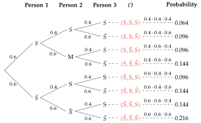
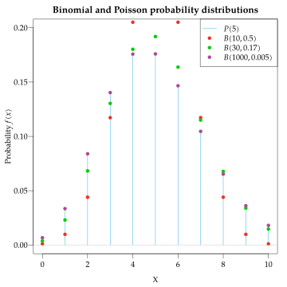

Discrete Random Variables Random variables The process of drawing a sample randomly is a random experiment and any variable measured in the sample is a random variable because the values taken by the variable in the individuals of the sample are a matter of chance. Definition - Random variable. A random variable $X$ is a function that maps every element of the sample space of a random experiment to a real number. $$X:\Omega \rightarrow \mathbb{R}$$ The set of values that the variable can assume is called the range and is represented by $\mbox{Ran}(X)$. In essence, a random variable is a variable whose values come from a random experiment, and every value has a probability of occurrence. Example. The variable $X$ that measures the outcome of rolling a dice is a random variable and its range is $\mbox{Ran}(X)={1,2,3,4,5,6}$. Types of random variables There are two types of random variables: Discrete. They take isolated values, and their range is numerable. Example. Number of children of a family, number of smoked cigarettes, number of subjects passed, etc. Continuous. They can take any value in a real interval, and their range is non-numerable. Example. Weight, height, age, cholesterol level, etc. The way of modelling each type of variable is different. In this chapter we are going to study how to model discrete variables. Probability distribution of a discrete random variable As values of a discrete random variable are linked to the elementary events of a random experiment, every value has a probability. Definition - Probability function. The probability function of a discrete random variable $X$ is the function $f(x)$ that maps every value $x_i$ of the variable to its probability$$f(x_i) = P(X=x_i).$$ We can also accumulate probabilities the same way that we accumulated sample frequencies. Definition - Distribution function. The distribution function of a discrete random variable $X$ is the function $F(x)$ that maps every value $x_i$ of the variable to the probability of having a value less than or equal to $x_i$$$F(x_i) = P(X\leq x_i) = f(x_1)+\cdots +f(x_i).$$ The range of a discrete random variable and its probability function is known as probability distribution of the variable, and it is usually presented in a table $$ \begin{array}{|c|cccc|c|} \hline X & x_1 & x_2 & \cdots & x_n & \sum\newline \hline f(x) & f(x_1) & f(x_2) & \cdots & f(x_n) & 1\newline \hline F(x) & F(x_1) & F(x_2) & \cdots & F(x_n) =1 & \newline \hline \end{array} $$ The same way that the sample frequency table shows the distribution of values of a variable in the sample, the probability distribution of a discrete random variable shows the distribution of values in the whole population. Example. Let $X$ be the discrete random variable that measures the number of heads after tossing two coins. The probability tree of the random experiment is According to this, the probability distribution of $X$ is $$\begin{array}{|c|ccc|} \hline X & 0 & 1 & 2\newline \hline f(x) & 0.25 & 0.5 & 0.25\newline \hline F(x) & 0.25 & 0.75 & 1 \newline \hline \end{array} \qquad F(x) = \begin{cases} 0 & \mbox{si $x<0$}\newline 0.25 & \mbox{si $0\leq x< 1$}\newline 0.75 & \mbox{si $1\leq x< 2$}\newline 1 & \mbox{si $x\geq 2$} \end{cases} $$ Population statistics The same way we use sample statistics to describe the sample frequency distribution of a variable, we use population statistics to describe the probability distribution of a random variable in the whole population. The population statistics definition is analogous to the sample statistics definition, but using probabilities instead of relative frequencies. The most important are 1: Definition - Discrete random variable mean The mean or the expectec value of a discrete random variable $X$ is the sum of the products of its values and its probabilities: $$\mu = E(X) = \sum_{i=1}^n x_i f(x_i)$$ Definition - Discrete random variable variance and standard deviation The variance of a discrete random variable $X$ is the sum of the products of its squared values and its probabilities, minus the squared mean: $$\sigma^2 = Var(X) = \sum_{i=1}^n x_i^2 f(x_i) -\mu^2$$ The standard deviation of a random variable $X$ is the square root of the variance: $$\sigma = +\sqrt{\sigma^2}$$ Example. In the random experiment of tossing two coins the probability distribution is $$ \begin{array}{|c|ccc|} \hline X & 0 & 1 & 2\newline \hline f(x) & 0.25 & 0.5 & 0.25\newline \hline F(x) & 0.25 & 0.75 & 1 \newline \hline \end{array} $$ The main population statistics are $$ \begin{aligned} \mu &= \sum_{i=1}^n x_i f(x_i) = 0\cdot 0.25 + 1\cdot 0.5 + 2\cdot 0.25 = 1 \mbox{ heads},\newline \sigma^2 &= \sum_{i=1}^n x_i^2 f(x_i) -\mu^2 = (0^0\cdot 0.25 + 1^2\cdot 0.5 + 2^2\cdot 0.25) - 1^2 = 0.5 \mbox{ heads}^2,\newline \sigma &= +\sqrt{0.5} = 0.71 \mbox{ heads}. \end{aligned} $$ Discrete probability distribution models According to the type of experiment where the random variable is measured, there are different probability distributions models. The most common are Discrete uniform Binomial Poisson Discrete uniform distribution $U(a,b)$ When all the values of a random variable $X$ have equal probability, the probability distribution of $X$ is uniform. Definition - Discrete uniform distribution $U(a,b)$. A discrete random variable $X$ follows a discrete uniform distribution model with parameters $a$ and $b$, noted $X\sim U(a,b)$, if its range is $\mbox{Ran}(X) = {a, a+1, \ldots,b}$ and its probability function is $$f(x)=\frac{1}{b-a+1}.$$ Observe that $a$ and $b$ are the minimum and the maximum of the range respectively. The mean and the variance are $$\mu = \sum_{i=0}^{b-a}\frac{a+i}{b-a+1}=\frac{a+b}{2} \qquad \sigma^2 =\sum_{i=0}^{b-a}\frac{(a+i-\mu)^2}{b-a+1}=\frac{(b-a+1)^2-1}{12}$$ Example. The variable that measures the outcome of rolling a dice follows a discrete uniform distribution model $U(1,6)$. Binomial distribution $B(n,p)$ Usually the binomial distribution corresponds to a variable measured in a random experiment with the following features: The experiment consist in a sequence of $n$ repetitions of the same trial. Each trial is repeated in identical conditions and produces two possible outcomes known as Success or Failure. The trials are independent. The probability of Success is the same in all the trials and is $P(\mbox{Success})=p$. Under these conditions, the discrete random variable $X$ that measures the number of successes in the $n$ trials follows a binomial distribution model with parameters $n$ and $p$. Definition - Binomial distribution $(B(n,p)$. A discrete random variable $X$ follows a binomial distribution model with parameters $n$ and $p$, noted $X\sim B(n,p)$, if its range is $\mbox{Ran}(X) = {0,1,\ldots,n}$ and its probability function is $$f(x) = \binom{n}{x}p^x(1-p)^{n-x} = \frac{n!}{x!(n-x)!}p^x(1-p)^{n-x}.$$ Observe that $n$ is known as the number of repetitions of a trial and $p$ is known as the probability of Success in every repetition. The mean and the variance are $$\mu = n\cdot p \qquad \sigma^2 = n\cdot p\cdot (1-p).$$ Example. The variable that measures the number of heads after tossing 10 coins follows a binomial distribution model $B(10,0.5)$. According to this, The probability of getting 4 heads is $$f(4) = \binom{10}{4}0.5^4 (1-0.5)^{10-4} = \frac{10!}{4!6!}0.5^40.5^6 = 210\cdot 0.5^{10} = 0.2051.$$ The probability of getting 2 or less heads is $$\begin{aligned} F(2) &= f(0) +f(1) + f(2) =\newline &= \binom{10}{0}0.5^0 (1-0.5)^{10-0} + \binom{10}{1}0.5^1 (1-0.5)^{10-1} + \binom{10}{2}0.5^2 (1-0.5)^{10-2} =\newline &= 0.0547.\end{aligned} $$ And the expected number of heads is $$\mu = 10\cdot 0.5 = 5 \mbox{ heads}.$$ Example. In a population there are a 40% of smokers. The variable $X$ that measures the number of smokers in a random sample with replacement of 3 persons follows a binomial distribution model $X\sim B(3,,0.4)$.  $$ \begin{align*} f(0)&=\displaystyle\binom{3}{0}0.4^0(1-0.4)^{3-0}= 0.6^3,\newline f(1)&=\displaystyle\binom{3}{1}0.4^1(1-0.4)^{3-1}= 3\cdot 0.4\cdot 0.6^2,\newline f(2)&=\displaystyle\binom{3}{2}0.4^2(1-0.4)^{3-2}= 3\cdot 0.4^2\cdot 0.6,\newline f(3)&=\displaystyle\binom{3}{3}0.4^3(1-0.4)^{3-3}= 0.4^3. \end{align*} $$ Poisson distribution $P(\lambda)$ Usually the Poisson distribution correspond to a variable measured in a random experiment with the following features: The experiment consists of observing the number of events occurring in a fixed interval of time or space. For instance, number of births in a month, number of emails in one hour, number of red blood cells in a volume of blood, etc. The events occur independently. The experiment produces the same average rate of events $\lambda$ for every interval unit. Under these conditions, the discrete random variable $X$ that measures the number of events in an interval unit follows a Poisson distribution model with parameter $\lambda$. Definition - Poisson distribution $P(\lambda)$. A discrete random variable $X$ follows a Poisson distribution model with parameter $\lambda$, noted $X\sim P(\lambda)$, if its range is $\mbox{Ran}(X) = {0,1,\ldots,\infty}$ and its probability function is $$f(x) = e^{-\lambda}\frac{\lambda^x}{x!}.$$ Observe that $\lambda$ is the average rate of event for an interval unit, and it will change if the interval changes. The mean and the variance are $$\mu = \lambda \qquad \sigma^2 = \lambda.$$ Example. In a city there are an average of 4 births every day. The random variable $X$ that measures the number of births in a day in the city follows a Poisson distribution model $X\sim P(4)$. According to this, The probability that there are 5 births in a day is $$f(5) = e^{-4}\frac{4^5}{5!} = 0.1563.$$ The probability that there are less than 2 births in a day is $$F(1) = f(0)+f(1) = e^{-4}\frac{4^0}{0!} + e^{-4}\frac{4^1}{1!} = 5e^{-4} = 0.0916.$$ The probability that there are more than 1 birth a day is $$P(X>1) = 1-P(X\leq 1) = 1-F(1) = 1-0.0916 = 0.9084.$$ Approximation of Binomial by Poisson distribution The Poisson distribution can be obtained from the Binomial distribution when the number of trials repetition tends to infinite and the probability of Success tends to zero. Law or rare events. The Binomial distribution $X\sim B(n,p)$ tends to the Poisson distribution $P(\lambda)$, with $\lambda=n\cdot p$, when $n$ tends to infinite and $p$ tends to zero, that is, $$\lim_{n\rightarrow \infty, p\rightarrow 0}\binom{n}{x}p^x(1-p)^{n-x} = e^{-\lambda}\frac{\lambda^x}{x!}.$$ In practice, this approximation can be used for $n\geq 30$ and $p\leq 0.1$.  Example. A vaccine produce an adverse reaction in 4% of cases. If a sample of 50 persons are vaccinated, what is the probability of having more than 2 persons with an adverse reaction? The variable that measures the number of persons with an adverse reaction in the sample follows a Binomial distribution model $X\sim B(50,0.04)$, but as $n=50>30$ and $p=0.04<0.1$, we can apply the law of rare events and use the Poisson distribution model $P(50\cdot 0.04)=P(2)$ to do the calculations. $$ \begin{aligned} P(X>2) &= 1-P(X\leq 2) = 1-f(0)-f(1)-f(2) =\newline &= 1-e^{-2}\frac{2^0}{0!}-e^{-2}\frac{2^1}{1!}-e^{-2}\frac{2^2}{2!} =\newline &= 1-5e^{-2} = 0.3233.\end{aligned} $$ To distinguish population statistics from sample statistics we use Greek letters. ↩︎ Statistics Biostatistics Random Variables Previous Probability Next Continuous Random Variables